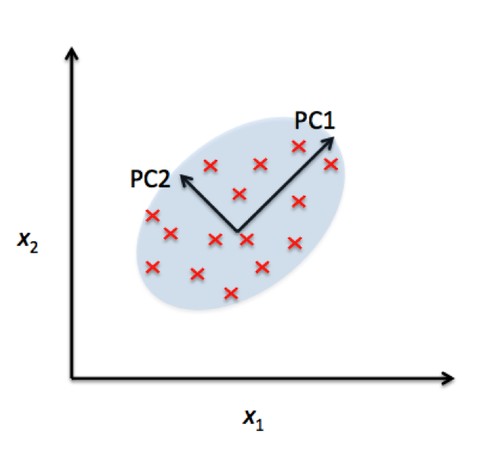
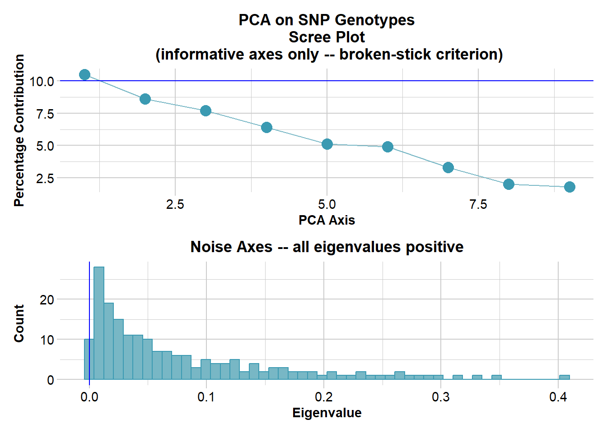

library(dartRverse)3 Identifying Population Structure
Session Presenters
Required packages
As always we need to have dartRverse installed and loaded. In addition you need to have dartR.popgen installend.
Uncovering Population Structure
Introduction
Why population structure matters
What is a “population” in population genetics?
Genetic structure defined – how allele frequencies vary among groups.
Key drivers: effective population size, gene flow/immigration, natural selection, drift.
Isolation-by-distance & sampling design – avoiding spurious structure.
Why we care: management units, inbreeding, local adaptation, introgression.


Analytical toolkit
| Approach | Purpose | dartR entry point |
| PCoA / PCA | Quick multivariate overview | gl.pcoa(), gl.pcoa.plot() |
| STRUCTURE | Bayesian clustering | gl.run.structure(), gl.plot.structure(), gl.map.structure(),gl.read.structure() |
| fastSTRUCTURE | Fast variational STRUCTURE (Mac/Linux) | gl.run.faststructure(), gl.plot.faststructure() |
| sNMF | Sparse non-negative matrix factorisation | gl.run.snmf(), gl.plot.snmf(), gl.map.snmf() |
| POPCLUSTER | Ultra-fast admixture inference | gl.run.popcluster(), gl.plot.popcluster(), gl.map.popcluster() |
Example
To help us understand our analytical toolkit better let’s start with a simple example using a simulated dataset.
The dataset contains 10 populations of 30 individuals each and 1000 loci and is part of the dartRverse package.
To get an overview of the dataset, we use the function: gl.map.interactive which plots the individuals on a map. Please note the genlight/dartR object needs to have valid lat long coordinates for each individual to be able to do so.
table(pop(possums.gl)) #check the individuals and the populations
A B C D E F G H I J
30 30 30 30 30 30 30 30 30 30 gl.map.interactive(possums.gl)Starting gl.map.interactive
Processing genlight object with SNP data
Completed: gl.map.interactive The populations are fairly independent but are linked by some imigration, so a typical Metapopulation scenario. The populations are named A to J and follow more or less an isolation by distance. So population next to each other (e.g. B and C) are fairly well mixed and populations further apart from the rest (e.g. D) are more isolated.
PCA
Principal Component Analysis (PCA) is a powerful statistical technique used for dimensionality reduction, data visualization, and feature extraction. In many real-world datasets, like our SNP datasets, data can have a very high number of features or dimensions. PCA helps by transforming the data into a new coordinate system where most of the variability in the data can be captured in fewer dimensions.
At its core, PCA identifies the directions (called principal components) along which the variation in the data is highest. These directions are orthogonal (perpendicular) to each other and are ranked by how much variance they capture from the original data. By projecting data onto the top few principal components, we can often retain the most important information while discarding noise or less useful details.

# Undertake a PCA on the raw data
pc <- gl.pcoa(possums.gl, verbose = 3)Starting gl.pcoa
Processing genlight object with SNP data
Warning: Number of loci is less than the number of individuals to be represented
Performing a PCA, individuals as entities, loci as attributes, SNP genotype as stateFound more than one class "dist" in cache; using the first, from namespace 'BiocGenerics'Also defined by 'spam'Found more than one class "dist" in cache; using the first, from namespace 'BiocGenerics'Also defined by 'spam'
Ordination yielded 9 informative dimensions( broken-stick criterion) from 299 original dimensions
PCA Axis 1 explains 10.5 % of the total variance
PCA Axis 1 and 2 combined explain 19.1 % of the total variance
PCA Axis 1-3 combined explain 26.8 % of the total variance
Starting gl.colors
Selected color type 2
Completed: gl.colors 
Completed: gl.pcoa # Plot the first two dimensions of the PCA
pc_a1a2 <- gl.pcoa.plot(glPca = pc, x = possums.gl)
# Plot the first and third dimensions of the PCA
pc_a1a3 <- gl.pcoa.plot(glPca = pc, x = possums.gl, xaxis = 1, yaxis = 3)
# Plot the first three dimensions of the PCA
pc_a1a3 <- gl.pcoa.plot(glPca = pc, x = possums.gl, xaxis = 1, yaxis = 2, zaxis = 3)Warning in RColorBrewer::brewer.pal(N, "Set2"): n too large, allowed maximum for palette Set2 is 8
Returning the palette you asked for with that many colors
Warning in RColorBrewer::brewer.pal(N, "Set2"): n too large, allowed maximum for palette Set2 is 8
Returning the palette you asked for with that many colorsSelect one cluster
# Select only the data from one cluster in the primary PCA
temp <- gl.drop.pop(x = possums.gl, pop.list = c('D', 'A', 'E', 'F', 'H'))Starting gl.drop.pop
Processing genlight object with SNP data
Checking for presence of nominated populations, deleting them
Warning: Resultant dataset may contain monomorphic loci
Locus metrics not recalculated
Completed: gl.drop.pop # Plot the first two dimensions of the secondary PCA
pc <- gl.pcoa(temp, verbose = 3)Starting gl.pcoa
Processing genlight object with SNP data
Performing a PCA, individuals as entities, loci as attributes, SNP genotype as stateFound more than one class "dist" in cache; using the first, from namespace 'BiocGenerics'Also defined by 'spam'Found more than one class "dist" in cache; using the first, from namespace 'BiocGenerics'Also defined by 'spam'
Ordination yielded 13 informative dimensions( broken-stick criterion) from 149 original dimensions
PCA Axis 1 explains 12.8 % of the total variance
PCA Axis 1 and 2 combined explain 20.9 % of the total variance
PCA Axis 1-3 combined explain 25.7 % of the total variance
Starting gl.colors
Selected color type 2
Completed: gl.colors 
Completed: gl.pcoa pc_plot <- gl.pcoa.plot(glPca = pc, x = temp)Starting gl.pcoa.plot
Processing an ordination file (glPca)
Processing genlight object with SNP data
Plotting populations in a space defined by the SNPs
Preparing plot .... please waitCompleted: gl.pcoa.plot Canberra grassland earless dragon
The Canberra Grassland Earless Dragon (Tympanocryptis lineata) is a small lizard that is usually less than 150 mm long and weighs 5–9 g. Each one has distinctive markings on its back that can be used to identify individuals.
Canberra Grassland Earless Dragons are grassland specialists, preferring natural temperate grasslands. Found in ACT grasslands and adjacent grasslands in NSW.
Lets take at a look at the pca of CGED.
There seems to be some grasslands more isolated than others.
What can go wrong
PCA is a hypothesis generating tool, not a tool for definitive decisions of the structure of populations.
Missing data causes distortion, which can lead to misinterpretation.
dartR, that uses the adgenet package for its pca, fills missing data with the global average.
You can choose alternative methods of filling in the missing data prior to running your pca using the gl.impute function.
Structure variants can also turn up on a PCA, like an inversion.

PCA is sample size dependent - but this is more for the top two dimensions not all the informative dimensions.
Structure and FastStructure (Bayesian clustering models)
Structure attempts to find the number of populations or sources (K ) at which population genetics parameters (i.e. Hardy–Weinberg equilibrium within populations and linkage equilibrium between loci) are maximized.
Admixture Model
Definition: The admixture model assumes that individuals can have ancestry from multiple populations. This means that the genetic makeup of an individual can be a mixture of two or more populations. This model is particularly useful for analyzing genetic data from populations that are known to have mixed or where there is gene flow between populations.
Application: It is applied when there is historical or recent admixture between populations, and it allows for the estimation of individual ancestry proportions from each of the inferred clusters. For example, an individual might be 50% from population A, 30% from population B, and 20% from population C under the admixture model.
Utility: The admixture model can uncover complex patterns of genetic structure that are not apparent under the assumption of discrete, non-overlapping populations.
No-Admixture Model
Definition: The no-admixture model assumes that individuals have ancestry from only one population. This model is particularly useful for analyzing genetic data from populations that are known to be isolated from one another.
Application: This model is used in situations where populations are relatively well-defined and isolated, with little to no gene flow between them. It simplifies the analysis by considering that an individual’s entire genetic information originates from one of the K clusters without any mixture.
Utility: The no-admixture model is useful for identifying distinct populations and their members, especially in cases where populations are clearly separated geographically or temporally.
To run STRUCTURE from within R, we need to download the non-GUI executable (the version without frontend) for your operating system [e.g windows, mac or linux]. You can download STRUCTURE for your OS from http://web.stanford.edu/group/pritchardlab/structure_software/release_versions/v2.3.4/html/structure.html.
The possible arguments are listed below:
| parameter | description |
|---|---|
| k.range | vector of values to for maxpop in multiple runs. If set to NULL, a single STRUCTURE run is conducted with maxpops groups. If specified, do not also specify maxpops. |
| num.k.rep | number of replicates for each value in k.range. |
| label | label to use for input and output files |
| delete.files | logical. Delete all files when STRUCTURE is finished? |
| exec | name of executable for STRUCTURE. Defaults to “structure”. |
| burnin | number of iterations for MCMC burnin. |
| numreps | number of MCMC replicates. |
| noadmix | logical. No admixture? |
| freqscorr | logical. Correlated frequencies? |
| randomize | randomize. |
| pop.prior | a character specifying which population prior model to use: “locprior” or “usepopinfo”. |
| locpriorinit | parameterizes locprior parameter r - how informative the populations are. Only used when pop.prior = “locprior”. |
| maxlocprior | specifies range of locprior parameter r. Only used when pop.prior = “locprior”. |
| gensback | integer defining the number of generations back to test for immigrant ancestry. Only used when pop.prior = “usepopinfo”. |
| migrprior | numeric between 0 and 1 listing migration prior. Only used when pop.prior = “usepopinfo”. |
| popflag | a vector of integers (0, 1) or logicals identifiying whether or not to use strata information. Only used when pop.prior = “usepopinfo”. |
| pops | vector of population labels to be used in place of numbers in STRUCTURE file. |
Running STRUCTURE
structure_file <- ifelse('structure.exe' %in% list.files('./binaries/'),
'./binaries/structure.exe', './binaries/structure')
srnoad <- gl.run.structure(possums.gl, k.range = 2:7, num.k.rep = 2,
exec = structure_file,plot.out = FALSE,
burnin=500, numreps=1000,
noadmix=TRUE)Starting gl.run.structure
Processing genlight object with SNP data
Completed: gl.run.structure Structure Results
Okay now that we got that out of our way lets see how to interpret the results of the structure run. However, to really trust our results we would want to run gl.run.structure with larger burn in and number of reps, more like burnin=50000 and numreps=100000. But this takes a while, so we will not be doing that today.
Evanno Plots
The Evanno method is a statistical approach used to determine the most likely number of genetic clusters (K) present in a dataset analyzed by STRUCTURE software. STRUCTURE is a computational tool used for inferring population structure using genetic data. Identifying the correct number of clusters (K) is crucial for accurately interpreting genetic data in the context of population structure, evolutionary biology, and conservation genetics. The Evanno method specifically addresses the challenge of choosing the optimal K by analyzing the rate of change in the likelihood of data between successive K values, rather than just relying on the maximum likelihood. This is done through the calculation of ΔK, a quantity based on the second order rate of change of the likelihood function with respect to K. The method suggests that the value of K corresponding to the highest ΔK should be considered the most likely number of clusters present in the dataset.
The Evanno method is a method to determine the most likely number of populations. It is based on the second order rate of change of the likelihood function with respect to K. The method is implemented in the gl.evanno function.
ev <- gl.evanno(srnoad)Plotting the results (Q matrix)
The Q matrix represents the estimated ancestry proportions of individuals across different inferred genetic clusters. STRUCTURE aims to identify K clusters (populations) that best explain the patterns of genetic variation observed in the data, with K either being predefined by the user or determined using methods like the Evanno method.
The Q matrix is essentially a matrix where each row corresponds to an individual in the dataset, and each column represents one of the K inferred genetic clusters. The entries in the matrix are the estimated proportions (ranging from 0 to 1) of each individual’s genome that originated from each cluster. The sum of an individual’s ancestry proportions across all K clusters equals 1.
The values in the Q matrix can be interpreted as the fraction of an individual’s ancestry that comes from each of the K clusters. The Q matrix is often visualized using bar plots or stacked bar graphs, where each individual’s ancestry proportions are shown as segments of a bar colored differently for each cluster.
To get a plot for a certain level you need to specify K or at least a range of K.
qmatnoad <- gl.plot.structure(srnoad, K=3:5)Starting gl.plot.structure Completed: gl.plot.structure head(qmatnoad[[1]]) Label cluster1 cluster2 cluster3 K orig.pop ord
<char> <num> <num> <num> <char> <fctr> <int>
1: 1 0 1 0 3 A 1
2: 10 0 1 0 3 A 2
3: 100 1 0 0 3 D 91
4: 101 1 0 0 3 D 92
5: 102 1 0 0 3 D 93
6: 103 1 0 0 3 D 94A “spatial” structure plot
gm <- gl.map.structure(qmat = qmatnoad, x = possums.gl,K=5, scalex=1, scaley=0.5 )
Exercise: Study the results using different Ks and with/without admixture
 The above run was a Structure run using the admixture model for a range of K=2:7. Study the results by plotting it for various Ks and try to interpret the results in the light of the simulated population structure.
The above run was a Structure run using the admixture model for a range of K=2:7. Study the results by plotting it for various Ks and try to interpret the results in the light of the simulated population structure.
How about trying it on your own data or the example data provided.
Running fastStructure
Faststructure
Faststructure is a faster implementation of the structure algorithm. Be aware though it is named Fast’structure’ it is a fairly different implementation of the original approach, hence the results might differ from the original STRUCTURE. The method is based on a variational Bayesian framework and is designed to be faster and more scalable than the original STRUCTURE software. It is particularly useful for analyzing large datasets with many individuals and/or many SNPs (>5000). One of the most important differences is that there is no no-admixture model in Faststructure, but you can run two models that allow for “complex” situtations (logistic prior) and situations where the ancestry is more evenly distributed (simple prior). Also the way how to identify K differ between the methods. We will run the previous examples with both settings and compare the results.
The method is now implemented in the gl.run.faststructure function. Unfortunatley noone to my knowledge has compiled Faststructure for windows, so it is only available for Linux and Mac. We also need to have plink installed as this is the required input format for faststructure.
Faststructure simple prior
platypus.gl ********************
*** DARTR OBJECT ***
********************
** 81 genotypes, 1,000 SNPs , size: 7.4 Mb
missing data: 5902 (=7.29 %) scored as NA
** Genetic data
@gen: list of 81 SNPbin
@ploidy: ploidy of each individual (range: 2-2)
** Additional data
@ind.names: 81 individual labels
@loc.names: 1000 locus labels
@loc.all: 1000 allele labels
@position: integer storing positions of the SNPs [within 69 base sequence]
@pop: population of each individual (group size range: 17-41)
@other: a list containing: loc.metrics, ind.metrics, latlon, loc.metrics.flags, verbose, history
@other$ind.metrics: id, pop, lat, lon, Microchip, Weight, Sex, AgeClass, concentration, PlateID, Row, Column, order_dart, id_b, service, plate_location, sex
@other$loc.metrics: AlleleID, CloneID, AlleleSequence, TrimmedSequence, Chrom_Platypus_Chrom_NCBIv1, ChromPos_Platypus_Chrom_NCBIv1, AlnCnt_Platypus_Chrom_NCBIv1, AlnEvalue_Platypus_Chrom_NCBIv1, SNP, SnpPosition, CallRate, OneRatioRef, OneRatioSnp, FreqHomRef, FreqHomSnp, FreqHets, PICRef, PICSnp, AvgPIC, AvgCountRef, AvgCountSnp, RepAvg, clone, uid, rdepth, monomorphs, maf, OneRatio, PIC
@other$latlon[g]: coordinates for all individuals are attachedgl.map.interactive(platypus.gl)Starting gl.map.interactive
Processing genlight object with SNP data
Warning: data include loci that are scored NA across all individuals.
Consider filtering using gl <- gl.filter.allna(gl)
Completed: gl.map.interactive # my_fast <- gl.run.faststructure(platypus.gl,
# k.range = 2:4,
# num.k.rep = 1,
# exec = "./binaries/fastStructure",
# exec.plink = "./binaries/", output = tempdir())
#
# gl.plot.faststructure(sr = my_fast,k.range = 3, border_ind = 0)Here we can check the marginal likelihoods for the different K values. The recommended K is then the one with the highest marginal likelihood at the lowest K possible. So here we would decide on K=4. As before we can plot the Q matrix and the spatial structure plot.
Running snmf
my_snmf <- gl.run.snmf(possums.gl, minK = 2, maxK = 7, rep = 2, regularization = 10)gl.plot.snmf(snmf_result = my_snmf,plot.K = 3, border_ind = 0)Popcluster
my_popcluster <- gl.run.popcluster(x = possums.gl, minK = 2, maxK = 7, rep = 2, popcluster.path = './binaries/')Starting gl.run.popcluster
Processing genlight object with SNP dataCompleted: gl.run.popcluster my_plot_popcluster <- gl.plot.popcluster(my_popcluster,plot.K = 3)Starting gl.plot.popcluster Completed: gl.plot.popcluster gl.map.popcluster(x = possums.gl, qmat = my_plot_popcluster)Joining with `by = join_by(Label)`$Q_name
$Q_name$A
Index Order Label PercentMiss Cluster Pop_1 Pop_2 Pop_3 Pop Pop_name
9 9 9 9 0.0 1 0.811 0.143 0.046 A A
3 3 3 3 0.0 1 0.840 0.000 0.160 A A
5 5 5 5 0.0 1 0.844 0.000 0.156 A A
8 8 8 8 0.0 1 0.845 0.051 0.104 A A
4 4 4 4 0.0 1 0.887 0.000 0.113 A A
2 2 2 2 0.0 1 0.896 0.104 0.000 A A
17 17 17 17 0.0 1 0.901 0.099 0.000 A A
19 19 19 19 0.0 1 0.908 0.059 0.033 A A
27 27 27 27 0.0 1 0.931 0.000 0.069 A A
7 7 7 7 0.0 1 0.949 0.000 0.051 A A
1 1 1 1 0.0 1 0.970 0.030 0.000 A A
25 25 25 25 0.0 1 0.974 0.026 0.000 A A
15 15 15 15 0.0 1 0.979 0.000 0.021 A A
23 23 23 23 0.0 1 0.979 0.000 0.021 A A
16 16 16 16 0.0 1 0.998 0.001 0.001 A A
6 6 6 6 0.0 1 0.999 0.000 0.001 A A
13 13 13 13 0.0 1 0.999 0.000 0.001 A A
20 20 20 20 0.0 1 0.999 0.000 0.001 A A
28 28 28 28 0.0 1 0.999 0.000 0.001 A A
10 10 10 10 0.0 1 0.999 0.001 0.000 A A
11 11 11 11 0.0 1 0.999 0.001 0.000 A A
12 12 12 12 0.0 1 0.999 0.001 0.000 A A
14 14 14 14 0.0 1 0.999 0.001 0.000 A A
18 18 18 18 0.0 1 0.999 0.001 0.000 A A
21 21 21 21 0.0 1 0.999 0.001 0.000 A A
22 22 22 22 0.0 1 0.999 0.001 0.000 A A
24 24 24 24 0.0 1 0.999 0.001 0.000 A A
26 26 26 26 0.0 1 0.999 0.001 0.000 A A
29 29 29 29 0.0 1 0.999 0.001 0.000 A A
30 30 30 30 0.0 1 0.999 0.001 0.000 A A
$Q_name$B
Index Order Label PercentMiss Cluster Pop_1 Pop_2 Pop_3 Pop Pop_name
48 48 48 48 0.0 2 0.000 0.762 0.238 B B
38 38 38 38 0.0 2 0.000 0.799 0.201 B B
31 31 31 31 0.0 2 0.000 0.822 0.178 B B
56 56 56 56 0.0 2 0.000 0.845 0.155 B B
45 45 45 45 0.0 2 0.000 0.848 0.152 B B
54 54 54 54 0.0 2 0.000 0.848 0.152 B B
59 59 59 59 0.0 2 0.000 0.892 0.108 B B
57 57 57 57 0.0 2 0.000 0.894 0.106 B B
32 32 32 32 0.0 2 0.000 0.903 0.097 B B
34 34 34 34 0.0 2 0.000 0.915 0.085 B B
50 50 50 50 0.0 2 0.000 0.926 0.074 B B
39 39 39 39 0.0 2 0.000 0.930 0.070 B B
36 36 36 36 0.0 2 0.000 0.999 0.001 B B
37 37 37 37 0.0 2 0.000 0.999 0.001 B B
51 51 51 51 0.0 2 0.001 0.997 0.002 B B
33 33 33 33 0.0 2 0.001 0.999 0.000 B B
60 60 60 60 0.0 2 0.001 0.999 0.000 B B
43 43 43 43 0.0 2 0.004 0.828 0.168 B B
58 58 58 58 0.0 2 0.004 0.857 0.139 B B
52 52 52 52 0.0 2 0.005 0.787 0.208 B B
41 41 41 41 0.0 2 0.025 0.975 0.000 B B
55 55 55 55 0.0 2 0.038 0.850 0.112 B B
44 44 44 44 0.0 2 0.054 0.860 0.086 B B
46 46 46 46 0.0 2 0.071 0.929 0.000 B B
35 35 35 35 0.0 2 0.076 0.924 0.000 B B
47 47 47 47 0.0 2 0.106 0.791 0.103 B B
49 49 49 49 0.0 2 0.151 0.849 0.000 B B
53 53 53 53 0.0 2 0.173 0.827 0.000 B B
40 40 40 40 0.0 2 0.175 0.825 0.000 B B
42 42 42 42 0.0 2 0.228 0.715 0.057 B B
$Q_name$C
Index Order Label PercentMiss Cluster Pop_1 Pop_2 Pop_3 Pop Pop_name
78 78 78 78 0.0 2 0.000 0.508 0.492 C C
80 80 80 80 0.0 2 0.000 0.513 0.487 C C
83 83 83 83 0.0 2 0.000 0.515 0.485 C C
67 67 67 67 0.0 2 0.000 0.593 0.407 C C
74 74 74 74 0.0 2 0.000 0.718 0.282 C C
63 63 63 63 0.0 2 0.000 0.736 0.264 C C
72 72 72 72 0.0 2 0.000 0.792 0.208 C C
75 75 75 75 0.0 2 0.000 0.806 0.194 C C
73 73 73 73 0.0 2 0.000 0.808 0.192 C C
84 84 84 84 0.0 2 0.000 0.830 0.170 C C
62 62 62 62 0.0 2 0.000 0.863 0.137 C C
65 65 65 65 0.0 2 0.000 0.874 0.126 C C
89 89 89 89 0.0 2 0.000 0.887 0.113 C C
70 70 70 70 0.0 2 0.000 0.900 0.100 C C
77 77 77 77 0.0 2 0.000 0.905 0.095 C C
68 68 68 68 0.0 2 0.000 0.910 0.090 C C
71 71 71 71 0.0 2 0.000 0.911 0.089 C C
69 69 69 69 0.0 2 0.000 0.915 0.085 C C
82 82 82 82 0.0 2 0.000 0.973 0.027 C C
87 87 87 87 0.0 2 0.000 0.999 0.001 C C
61 61 61 61 0.0 2 0.001 0.844 0.155 C C
76 76 76 76 0.0 2 0.001 0.951 0.048 C C
90 90 90 90 0.0 2 0.002 0.799 0.199 C C
88 88 88 88 0.0 2 0.002 0.820 0.178 C C
66 66 66 66 0.0 2 0.003 0.589 0.408 C C
85 85 85 85 0.0 2 0.006 0.732 0.262 C C
86 86 86 86 0.0 2 0.006 0.739 0.255 C C
81 81 81 81 0.0 2 0.037 0.751 0.212 C C
64 64 64 64 0.0 2 0.037 0.826 0.137 C C
79 79 79 79 0.0 2 0.165 0.772 0.063 C C
$Q_name$D
Index Order Label PercentMiss Cluster Pop_1 Pop_2 Pop_3 Pop Pop_name
97 97 97 97 0.0 3 0.000 0.001 0.999 D D
99 99 99 99 0.0 3 0.000 0.001 0.999 D D
104 104 104 104 0.0 3 0.000 0.001 0.999 D D
105 105 105 105 0.0 3 0.000 0.001 0.999 D D
110 110 110 110 0.0 3 0.000 0.001 0.999 D D
120 120 120 120 0.0 3 0.000 0.001 0.999 D D
92 92 92 92 0.0 3 0.001 0.000 0.999 D D
94 94 94 94 0.0 3 0.001 0.000 0.999 D D
98 98 98 98 0.0 3 0.001 0.000 0.999 D D
100 100 100 100 0.0 3 0.001 0.000 0.999 D D
102 102 102 102 0.0 3 0.001 0.000 0.999 D D
107 107 107 107 0.0 3 0.001 0.000 0.999 D D
109 109 109 109 0.0 3 0.001 0.000 0.999 D D
111 111 111 111 0.0 3 0.001 0.000 0.999 D D
113 113 113 113 0.0 3 0.001 0.000 0.999 D D
114 114 114 114 0.0 3 0.001 0.000 0.999 D D
115 115 115 115 0.0 3 0.001 0.000 0.999 D D
116 116 116 116 0.0 3 0.001 0.000 0.999 D D
117 117 117 117 0.0 3 0.001 0.000 0.999 D D
118 118 118 118 0.0 3 0.001 0.000 0.999 D D
95 95 95 95 0.0 3 0.001 0.001 0.998 D D
96 96 96 96 0.0 3 0.001 0.001 0.998 D D
103 103 103 103 0.0 3 0.001 0.001 0.998 D D
119 119 119 119 0.0 3 0.001 0.001 0.998 D D
93 93 93 93 0.0 3 0.023 0.000 0.977 D D
106 106 106 106 0.0 3 0.031 0.000 0.969 D D
91 91 91 91 0.0 3 0.034 0.000 0.966 D D
101 101 101 101 0.0 3 0.061 0.000 0.939 D D
108 108 108 108 0.0 3 0.075 0.000 0.925 D D
112 112 112 112 0.0 3 0.089 0.000 0.911 D D
$Q_name$E
Index Order Label PercentMiss Cluster Pop_1 Pop_2 Pop_3 Pop Pop_name
121 121 121 121 0.0 3 0.000 0.001 0.999 E E
122 122 122 122 0.0 3 0.000 0.001 0.999 E E
123 123 123 123 0.0 3 0.000 0.001 0.999 E E
126 126 126 126 0.0 3 0.000 0.001 0.999 E E
129 129 129 129 0.0 3 0.000 0.001 0.999 E E
131 131 131 131 0.0 3 0.000 0.001 0.999 E E
135 135 135 135 0.0 3 0.000 0.001 0.999 E E
137 137 137 137 0.0 3 0.000 0.001 0.999 E E
140 140 140 140 0.0 3 0.000 0.001 0.999 E E
142 142 142 142 0.0 3 0.000 0.001 0.999 E E
143 143 143 143 0.0 3 0.000 0.001 0.999 E E
144 144 144 144 0.0 3 0.000 0.001 0.999 E E
146 146 146 146 0.0 3 0.000 0.001 0.999 E E
148 148 148 148 0.0 3 0.000 0.001 0.999 E E
150 150 150 150 0.0 3 0.000 0.028 0.972 E E
138 138 138 138 0.0 3 0.000 0.048 0.952 E E
139 139 139 139 0.0 3 0.000 0.054 0.946 E E
147 147 147 147 0.0 3 0.000 0.066 0.934 E E
149 149 149 149 0.0 3 0.000 0.079 0.921 E E
141 141 141 141 0.0 3 0.000 0.089 0.911 E E
136 136 136 136 0.0 3 0.000 0.138 0.862 E E
128 128 128 128 0.0 3 0.001 0.000 0.999 E E
130 130 130 130 0.0 3 0.001 0.000 0.999 E E
124 124 124 124 0.0 3 0.001 0.001 0.998 E E
145 145 145 145 0.0 3 0.032 0.000 0.968 E E
125 125 125 125 0.0 3 0.044 0.000 0.956 E E
127 127 127 127 0.0 3 0.063 0.000 0.937 E E
132 132 132 132 0.0 3 0.066 0.000 0.934 E E
133 133 133 133 0.0 3 0.073 0.000 0.927 E E
134 134 134 134 0.0 3 0.075 0.000 0.925 E E
$Q_name$F
Index Order Label PercentMiss Cluster Pop_1 Pop_2 Pop_3 Pop Pop_name
151 151 151 151 0.0 2 0.001 0.999 0 F F
152 152 152 152 0.0 2 0.001 0.999 0 F F
153 153 153 153 0.0 2 0.001 0.999 0 F F
154 154 154 154 0.0 2 0.001 0.999 0 F F
155 155 155 155 0.0 2 0.001 0.999 0 F F
156 156 156 156 0.0 2 0.001 0.999 0 F F
157 157 157 157 0.0 2 0.001 0.999 0 F F
158 158 158 158 0.0 2 0.001 0.999 0 F F
159 159 159 159 0.0 2 0.001 0.999 0 F F
160 160 160 160 0.0 2 0.001 0.999 0 F F
161 161 161 161 0.0 2 0.001 0.999 0 F F
162 162 162 162 0.0 2 0.001 0.999 0 F F
163 163 163 163 0.0 2 0.001 0.999 0 F F
164 164 164 164 0.0 2 0.001 0.999 0 F F
165 165 165 165 0.0 2 0.001 0.999 0 F F
167 167 167 167 0.0 2 0.001 0.999 0 F F
168 168 168 168 0.0 2 0.001 0.999 0 F F
169 169 169 169 0.0 2 0.001 0.999 0 F F
170 170 170 170 0.0 2 0.001 0.999 0 F F
171 171 171 171 0.0 2 0.001 0.999 0 F F
172 172 172 172 0.0 2 0.001 0.999 0 F F
173 173 173 173 0.0 2 0.001 0.999 0 F F
174 174 174 174 0.0 2 0.001 0.999 0 F F
176 176 176 176 0.0 2 0.001 0.999 0 F F
177 177 177 177 0.0 2 0.001 0.999 0 F F
178 178 178 178 0.0 2 0.001 0.999 0 F F
179 179 179 179 0.0 2 0.001 0.999 0 F F
180 180 180 180 0.0 2 0.001 0.999 0 F F
175 175 175 175 0.0 2 0.024 0.976 0 F F
166 166 166 166 0.0 2 0.052 0.948 0 F F
$Q_name$G
Index Order Label PercentMiss Cluster Pop_1 Pop_2 Pop_3 Pop Pop_name
194 194 194 194 0.0 2 0.000 0.975 0.025 G G
189 189 189 189 0.0 2 0.001 0.999 0.000 G G
190 190 190 190 0.0 2 0.001 0.999 0.000 G G
196 196 196 196 0.0 2 0.001 0.999 0.000 G G
197 197 197 197 0.0 2 0.001 0.999 0.000 G G
204 204 204 204 0.0 2 0.001 0.999 0.000 G G
206 206 206 206 0.0 2 0.001 0.999 0.000 G G
209 209 209 209 0.0 2 0.001 0.999 0.000 G G
184 184 184 184 0.0 2 0.018 0.982 0.000 G G
193 193 193 193 0.0 2 0.025 0.975 0.000 G G
202 202 202 202 0.0 2 0.052 0.948 0.000 G G
187 187 187 187 0.0 2 0.057 0.943 0.000 G G
207 207 207 207 0.0 2 0.066 0.934 0.000 G G
208 208 208 208 0.0 2 0.068 0.932 0.000 G G
203 203 203 203 0.0 2 0.077 0.923 0.000 G G
205 205 205 205 0.0 2 0.079 0.921 0.000 G G
198 198 198 198 0.0 2 0.080 0.920 0.000 G G
210 210 210 210 0.0 2 0.082 0.918 0.000 G G
195 195 195 195 0.0 2 0.089 0.911 0.000 G G
200 200 200 200 0.0 2 0.094 0.906 0.000 G G
201 201 201 201 0.0 2 0.098 0.902 0.000 G G
183 183 183 183 0.0 2 0.107 0.893 0.000 G G
182 182 182 182 0.0 2 0.121 0.879 0.000 G G
185 185 185 185 0.0 2 0.123 0.877 0.000 G G
188 188 188 188 0.0 2 0.132 0.868 0.000 G G
191 191 191 191 0.0 2 0.132 0.868 0.000 G G
186 186 186 186 0.0 2 0.133 0.867 0.000 G G
181 181 181 181 0.0 2 0.153 0.847 0.000 G G
192 192 192 192 0.0 2 0.166 0.834 0.000 G G
199 199 199 199 0.0 2 0.178 0.822 0.000 G G
$Q_name$H
Index Order Label PercentMiss Cluster Pop_1 Pop_2 Pop_3 Pop Pop_name
232 232 232 232 0.0 1 0.929 0.000 0.071 H H
230 230 230 230 0.0 1 0.932 0.068 0.000 H H
212 212 212 212 0.0 1 0.998 0.001 0.001 H H
214 214 214 214 0.0 1 0.998 0.001 0.001 H H
217 217 217 217 0.0 1 0.998 0.001 0.001 H H
222 222 222 222 0.0 1 0.998 0.001 0.001 H H
223 223 223 223 0.0 1 0.998 0.001 0.001 H H
237 237 237 237 0.0 1 0.998 0.001 0.001 H H
238 238 238 238 0.0 1 0.998 0.001 0.001 H H
240 240 240 240 0.0 1 0.998 0.001 0.001 H H
220 220 220 220 0.0 1 0.999 0.000 0.001 H H
221 221 221 221 0.0 1 0.999 0.000 0.001 H H
224 224 224 224 0.0 1 0.999 0.000 0.001 H H
226 226 226 226 0.0 1 0.999 0.000 0.001 H H
227 227 227 227 0.0 1 0.999 0.000 0.001 H H
228 228 228 228 0.0 1 0.999 0.000 0.001 H H
229 229 229 229 0.0 1 0.999 0.000 0.001 H H
236 236 236 236 0.0 1 0.999 0.000 0.001 H H
239 239 239 239 0.0 1 0.999 0.000 0.001 H H
211 211 211 211 0.0 1 0.999 0.001 0.000 H H
213 213 213 213 0.0 1 0.999 0.001 0.000 H H
215 215 215 215 0.0 1 0.999 0.001 0.000 H H
216 216 216 216 0.0 1 0.999 0.001 0.000 H H
218 218 218 218 0.0 1 0.999 0.001 0.000 H H
219 219 219 219 0.0 1 0.999 0.001 0.000 H H
225 225 225 225 0.0 1 0.999 0.001 0.000 H H
231 231 231 231 0.0 1 0.999 0.001 0.000 H H
233 233 233 233 0.0 1 0.999 0.001 0.000 H H
234 234 234 234 0.0 1 0.999 0.001 0.000 H H
235 235 235 235 0.0 1 0.999 0.001 0.000 H H
$Q_name$I
Index Order Label PercentMiss Cluster Pop_1 Pop_2 Pop_3 Pop Pop_name
263 263 263 263 0.0 2 0.000 0.878 0.122 I I
259 259 259 259 0.0 2 0.000 0.905 0.095 I I
254 254 254 254 0.0 2 0.000 0.923 0.077 I I
253 253 253 253 0.0 2 0.000 0.932 0.068 I I
255 255 255 255 0.0 2 0.000 0.962 0.038 I I
243 243 243 243 0.0 2 0.000 0.981 0.019 I I
242 242 242 242 0.0 2 0.000 0.999 0.001 I I
245 245 245 245 0.0 2 0.000 0.999 0.001 I I
249 249 249 249 0.0 2 0.000 0.999 0.001 I I
250 250 250 250 0.0 2 0.000 0.999 0.001 I I
256 256 256 256 0.0 2 0.000 0.999 0.001 I I
258 258 258 258 0.0 2 0.000 0.999 0.001 I I
261 261 261 261 0.0 2 0.000 0.999 0.001 I I
262 262 262 262 0.0 2 0.000 0.999 0.001 I I
268 268 268 268 0.0 2 0.000 0.999 0.001 I I
269 269 269 269 0.0 2 0.000 0.999 0.001 I I
252 252 252 252 0.0 2 0.001 0.999 0.000 I I
260 260 260 260 0.0 2 0.001 0.999 0.000 I I
265 265 265 265 0.0 2 0.001 0.999 0.000 I I
266 266 266 266 0.0 2 0.001 0.999 0.000 I I
267 267 267 267 0.0 2 0.001 0.999 0.000 I I
244 244 244 244 0.0 2 0.002 0.894 0.104 I I
270 270 270 270 0.0 2 0.005 0.886 0.109 I I
248 248 248 248 0.0 2 0.005 0.944 0.051 I I
264 264 264 264 0.0 2 0.012 0.797 0.191 I I
247 247 247 247 0.0 2 0.014 0.844 0.142 I I
241 241 241 241 0.0 2 0.039 0.895 0.066 I I
246 246 246 246 0.0 2 0.049 0.799 0.152 I I
251 251 251 251 0.0 2 0.066 0.756 0.178 I I
257 257 257 257 0.0 2 0.076 0.886 0.038 I I
$Q_name$J
Index Order Label PercentMiss Cluster Pop_1 Pop_2 Pop_3 Pop Pop_name
300 300 300 300 0.0 2 0.000 0.699 0.301 J J
284 284 284 284 0.0 2 0.000 0.792 0.208 J J
282 282 282 282 0.0 2 0.000 0.828 0.172 J J
297 297 297 297 0.0 2 0.000 0.842 0.158 J J
285 285 285 285 0.0 2 0.000 0.887 0.113 J J
292 292 292 292 0.0 2 0.000 0.893 0.107 J J
279 279 279 279 0.0 2 0.000 0.896 0.104 J J
275 275 275 275 0.0 2 0.000 0.897 0.103 J J
278 278 278 278 0.0 2 0.000 0.908 0.092 J J
298 298 298 298 0.0 2 0.000 0.913 0.087 J J
289 289 289 289 0.0 2 0.000 0.957 0.043 J J
271 271 271 271 0.0 2 0.000 0.967 0.033 J J
295 295 295 295 0.0 2 0.000 0.998 0.002 J J
272 272 272 272 0.0 2 0.000 0.999 0.001 J J
273 273 273 273 0.0 2 0.000 0.999 0.001 J J
276 276 276 276 0.0 2 0.000 0.999 0.001 J J
277 277 277 277 0.0 2 0.000 0.999 0.001 J J
280 280 280 280 0.0 2 0.000 0.999 0.001 J J
283 283 283 283 0.0 2 0.000 0.999 0.001 J J
287 287 287 287 0.0 2 0.000 0.999 0.001 J J
288 288 288 288 0.0 2 0.000 0.999 0.001 J J
290 290 290 290 0.0 2 0.000 0.999 0.001 J J
291 291 291 291 0.0 2 0.000 0.999 0.001 J J
293 293 293 293 0.0 2 0.000 0.999 0.001 J J
294 294 294 294 0.0 2 0.000 0.999 0.001 J J
296 296 296 296 0.0 2 0.000 0.999 0.001 J J
274 274 274 274 0.0 2 0.001 0.945 0.054 J J
281 281 281 281 0.0 2 0.001 0.999 0.000 J J
286 286 286 286 0.0 2 0.001 0.999 0.000 J J
299 299 299 299 0.0 2 0.057 0.855 0.088 J J
$mapFurther Study
Pdfs/links
Readings
• Evanno et al. 2005 – Detecting the number of clusters (ΔK).
• Lawson et al. 2018 – How not to over-interpret STRUCTURE/ADMIXTURE plots.
• Wang 2017 – Common pitfalls when using STRUCTURE.
• Raj et al. 2014 – fastSTRUCTURE.
• Frichot et al. 2014 – sNMF.
• Wang 2022 – POPCLUSTER.
• Kopelman et al. 2015 – CLUMPAK.
• Jakobsson & Rosenberg 2007 – CLUMPP.